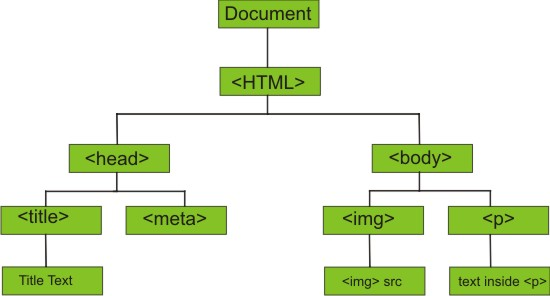

JavaScript DOM (Document Object Model) Kullan�m�
Taray�c� bir Web sayfas�n� y�klendi�inde DOM nesnesini de olu�turur. Y�klenen DOM, belge i�in bir dizi d���m ve nesne sunmaktad�r. D���mler ile ayr�ca olaylar ve tetikleyiciler eklenebilir. �zetle programlama dilini WEB sayfas�na ba�lamak i�in kullan�l�r.
DOM modeli nesneleri a�a��daki gibi a�a� yap�s�nda olu�turmaktad�r.
JavaScript, Nesne Modelini kullanarak HTML belgesini d�zenlemek i�in gerekli t�m yetkilere sahiptir. A�a��daki gibi belge �zerinde t�m i�lemleri ger�ekle�tirebiliriz.
JavaScript sayfadaki t�m HTML ��relerini de�i�tirebilir.
JavaScript sayfadaki t�m HTML niteliklerini de�i�tirebilir.
JavaScript sayfadaki t�m CSS stillerini de�i�tirebilir.
JavaScript mevcut HTML belgesindeki nitelikleri kald�rabilir.
JavaScript yeni HTML ��eleri ve nitelikleri ekleyebilir.
JavaScript sayfadaki t�m HTML olaylar�na tepki g�sterebilir.
JavaScript yeni HTML olaylar� olu�turabilir.

DOM Programlama Aray�z�
JavaScript ile T�m HTML DOM a�ac�na ula�abilirsiniz.
DOM i�inde t�m HTML etiketleri birer nesne (object) olarak olu�turulmu�tur.
Programlama aray�z� her etiket i�in metot(method) ve �zellikler(property) sunar.
�zellik( Property) etiket de�eri �zerinde okuma ve de�i�tirme yapma imkan� sunar.(��eri�i de�i�tirme gibi)
Methot (Method) etiket �zerinde eylemler ger�ekle�tirme imkan� sunar.(Yeni etiketler ekleme gibi)
�rnek: